Using Prompt Engineering to Identify the LLM for your Application¶
Generative AI refers to deep-learning models that can generate high-quality text, images, and other content based on the data they were trained on. A Large Language Model (LLM) is a type of language model notable for its ability to achieve general-purpose language understanding and generation.
The goal of this lab is to show how you can use prompt engineering with LLMs in order to elicit more accurate, relevant, and context-aware responses related to travel information on countries. We'll then leverage that information when building the application in Lab 2.
Note: The following images show actual results from watsonx.ai prompt lab. The slight gray text is what we provided to the model. The blue highlighted text is how the model responded. Be aware that the outputs shown here may not exactly resemble the outputs you receive when using the prompt lab.
Steps¶
Step 1. Getting started¶
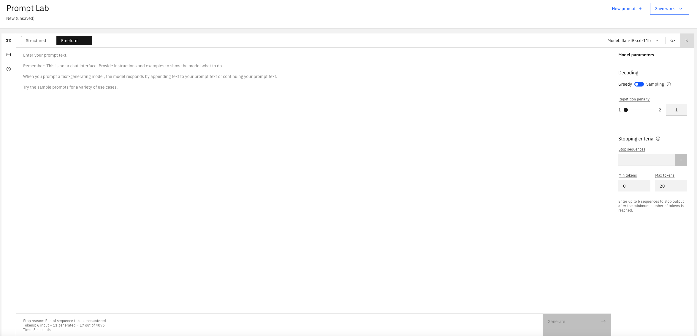
When you open up watsonx.ai prompt lab and click the Freeform mode-option, this is what you will be shown. The large central text area is the prompt editor. On the right-side, you can display the model parameters that you can use to optimize how the model responds to your prompt. On the bottom-left is a summary of the number of tokens used by your prompt during execution. For more information on prompt engineering, see watsonx prompt lab.
Note: The models provided in the prompt lab are foundation models which are hosted on IBM cloud so we can inference or call them. LLMs are a type of foundation model which we will use in this lab.
Step 2. First prompt¶
When starting with the initial prompt, it's best to just try something quickly and if it doesn't give you the result you want, then go ahead and improve it over time. We will do this in a step by step process.
Let's start with:
- Model:
flan-t5-xxl-11b - Prompt text:
I am thinking of travelling to Thailand.
This produces the following output when we call the model (in other words, click on the "Generate" button):
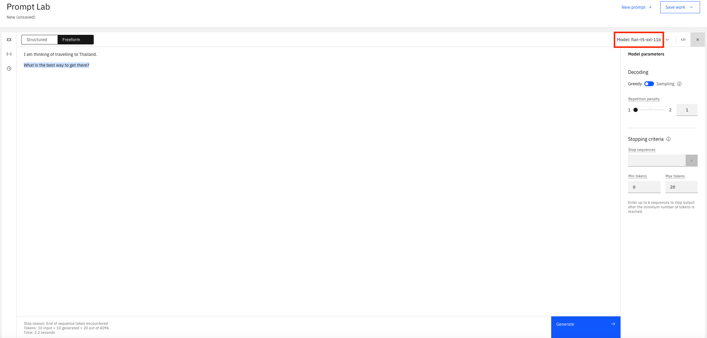
This however returns a response which is not very useful, as we don't get any information on Thailand. This is analgous to questioning a person about a particular topic. The more open ended the questions, then the more generic the answers will be. However, the more closed the questions, then the more specific the answers. We therefore need to go again and provide more specfic context in the prompt to help direct the model to generate information about Thailand.
Step 3. Being more direct¶
Let's be more direct in our prompt this time:
- Prompt text:
I am thinking of travelling to Thailand. Tell me about Thailand.
This produces the following output when we call the model:
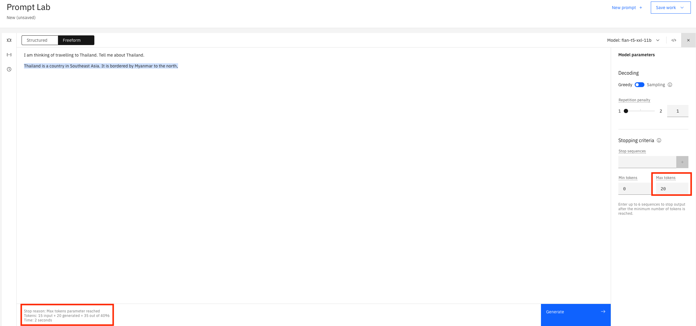
This is more promising as we are now getting some information on Thailand. However, it seems to finish mid-sentence. The summary of the number of tokens (on the bottom-left) provides the following reason: Stop reason: Max tokens parameter reached.
This means we do not have enough tokens to process the request. Tokens represent the smallest entity which is handled by the model architecture. For our discussion in this lab, we will view tokens as equivalent to words (see Tokens and tokenization for a more exact definition). We therefore need to increase our "Max tokens".
Step 4. Tinkering with model parameters¶
When we increase Max tokens to 200 and run with the same prompt again, we will get output similar to the following:
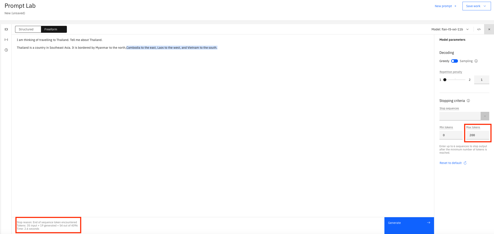
This time it finished the sentence and the summary of the number of tokens reason reads as follows: Stop reason: End of sequence token encountered. All good from that aspect.
Every time we query the model however, it will return the same answer. This is because we are using Greedy decoding. This style of decoding asks the model to return what it thinks is the best or statistically the most accurate response always. Let's change Decoding to Sampling and see what the model returns with the same prompt each time.
You will now see different responses similar to the following:
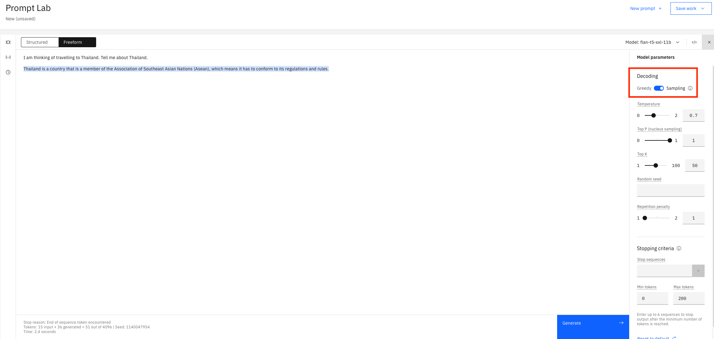
Variety is the spice of life! There are more parameters which you can configure the model differently with but we will not cover them in this lab. See watsonx prompt lab for more details on parameters and how to use them.
Step 5. Getting more specific¶
We have played around with the prompt text and the model parameters which has guided the model to return information on Thailand. It is however generic information and for the design of our travel app we would like to be able to provide information tailored to users interests. Let's therefore update the prompt text as follows to show information on water sports and food: I am thinking of travelling to Thailand. I like water sports and food. Tell me about Thailand..
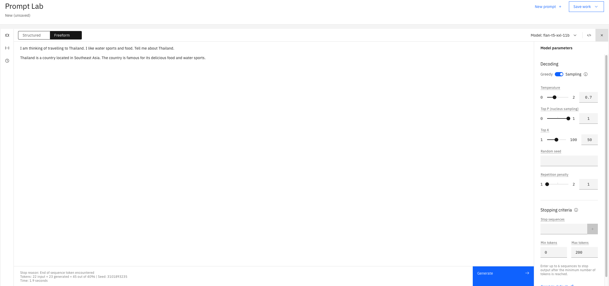
This response is very limited and it should be more informative to be useful in your application. We have tried different prompts and parameters, but we still don't have the relevant information we require. Maybe the model we are using has limitations for our requirements. Is it time therefore to check out out a different model?
Step 6. Checking out other models¶
watsonx.ai prompt lab provides information cards on the models it supports. The card can provide information like:
- Provider and source of the model
- Tasks the model is best suited to
- How to tune the model
- White paper it is based on
- Bias, risks, and limitations
You can access the information on the models by clicking on the dropdown alongside the model name and selecting "View all foundation models" as follows:
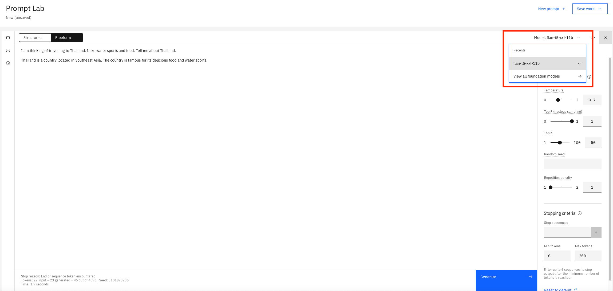
Here is list of the models currently supported on the free tier prompt lab:
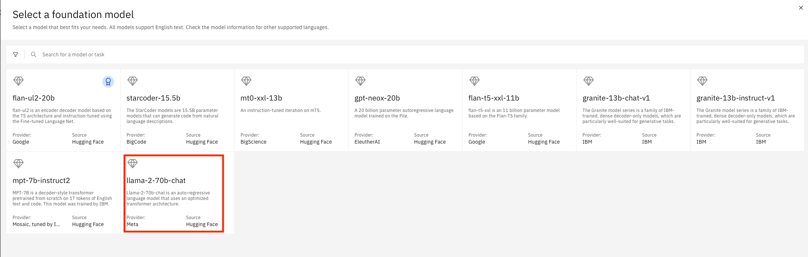
Click on the llama-2-70b-chat model to look at its information card:
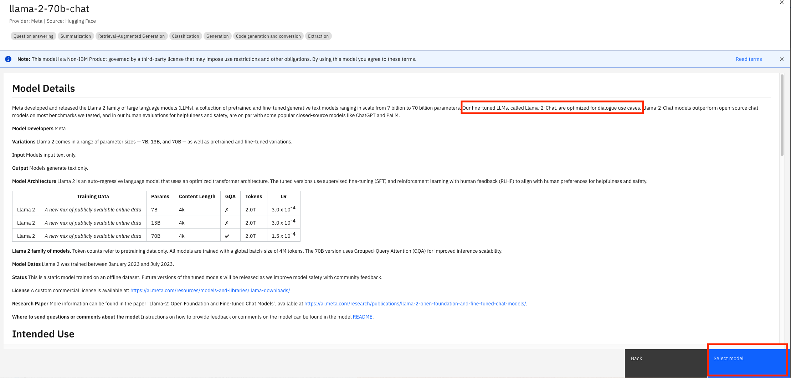
There is an interesting piece of information highlighted which states that the model is "optimized for dialogue use cases". As we are trying to find a model to question for information, it looks like this model might be a good fit. Click on "Select model" buton and let's try the model out to see if it returns more information on Thailand.
Step 7. Using a different model¶
We have now selected the llama-2-70b-chat model, and using the same prompt and parameters, let's see what it returns.
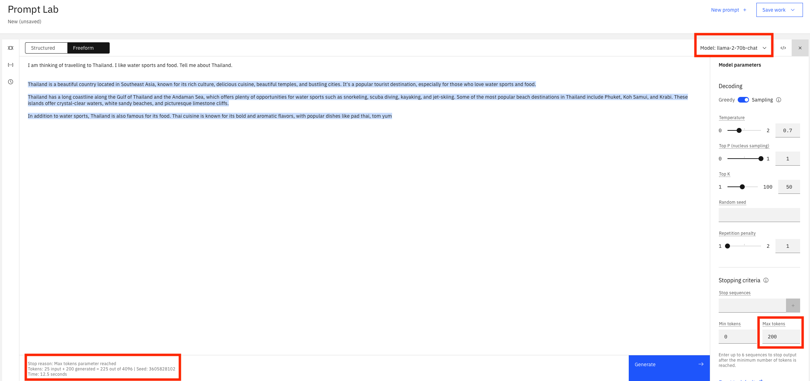
This definitely looks like an improvement but it looks like the response was cut off, similar to a previous step. This is confirmed by Stop reason: Max tokens parameter reached comment in the summary of the number of tokens. As tokens increase, so does the cost of calling a model. This time, instead of just increasing the token size, it would be great if we had a less expensive alternative. This is what we will try in the next section.
Step 8. Adding limits to the prompt¶
We will alter the prompt text by adding a limit to the response returned. In this way, we tell the model to return the response within the limit we define. The prompt text will now be altered to look like this: I am thinking of travelling to Thailand. I like water sports and food. Give me 5 sentences on Thailand..
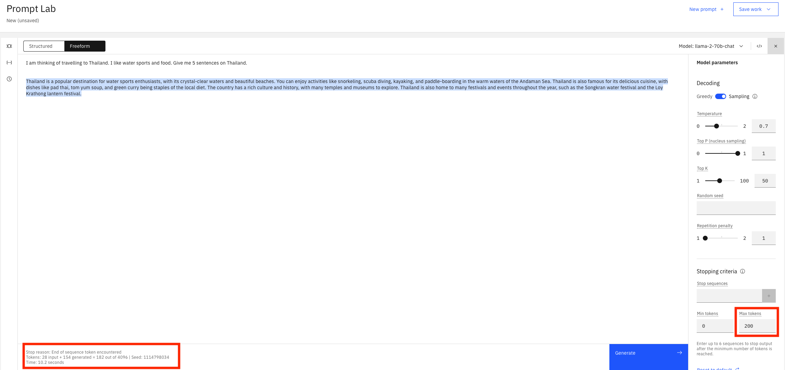
Finally, we have a response from our query on Thailand that is useful, informative and tailored to a user's preferences. It is also within our max token size. We have a result!
Conclusion and next steps¶
There is an alternative to training and creating a new model to fit your needs, and that is prompt tuning of a LLM. As you have seen in the lab we just did, it requires iterative testing and tweaking to find the model and prompt that suits your requirements. This is a simple example we are using but the same principles apply to other scenarios. It may require more context in the prompt, including using examples (i.e. shot prompting) to guide the response.
It was mentioned previously that the models are hosted on IBM Cloud and are inferenced/called when we click the "Generate" button. You can check out the REST API that is called on the model by clicking on the "View code" dropdown as shown:
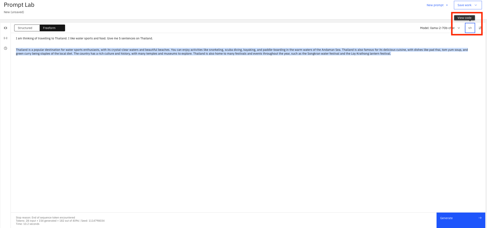
When you click on "View code", you will see output similar to the following which shows all the details of the API call including model name, prompt text, and parameters.
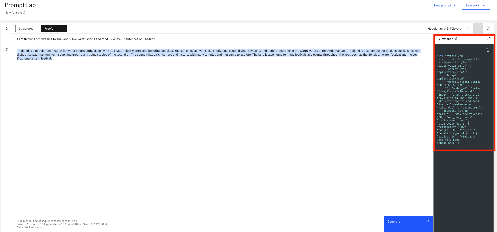
Now that we have identified the model, parameters, and prompt that we will use, let's move on to Lab 2 where we will build the application using this information.